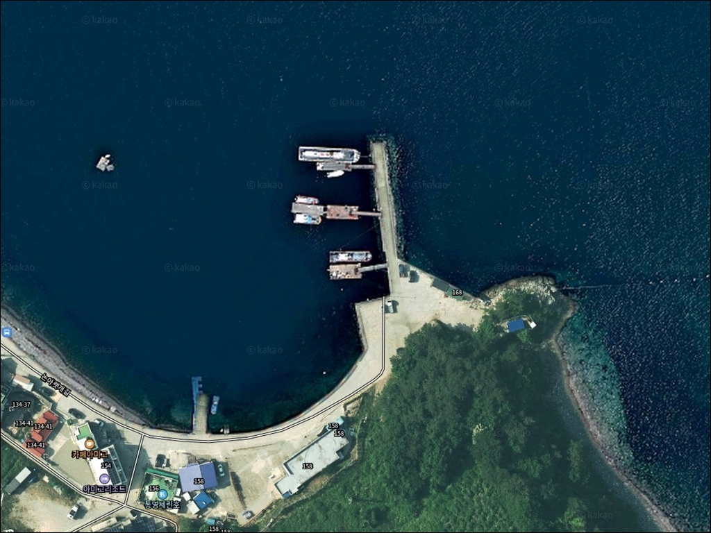
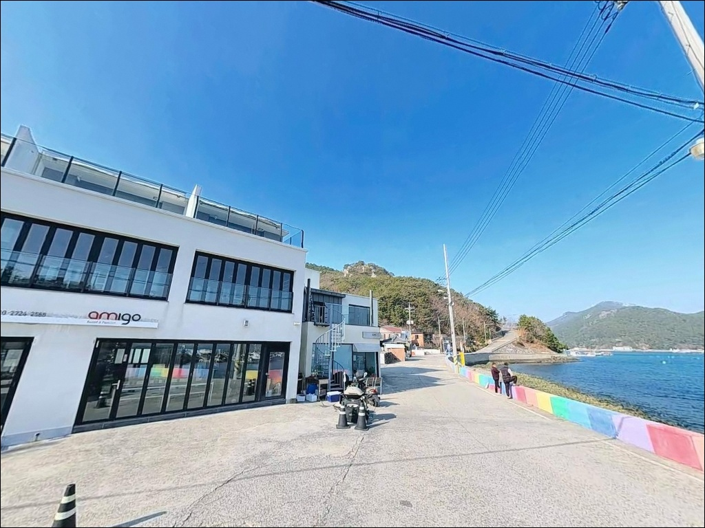
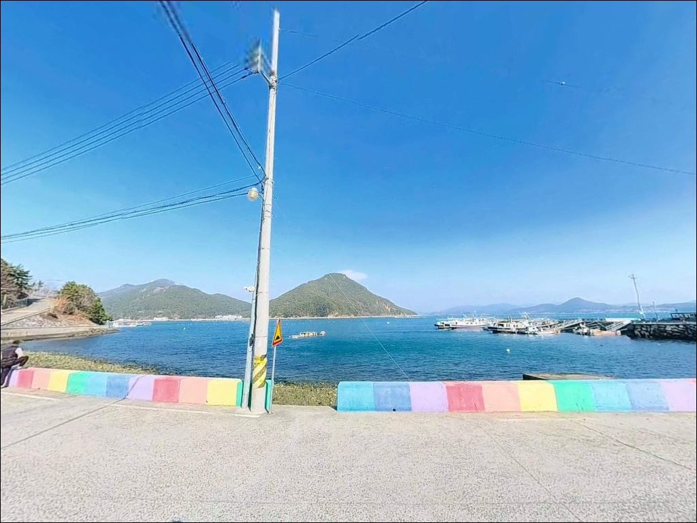
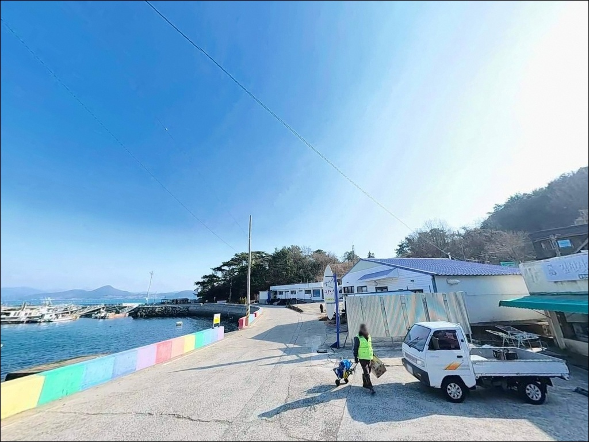
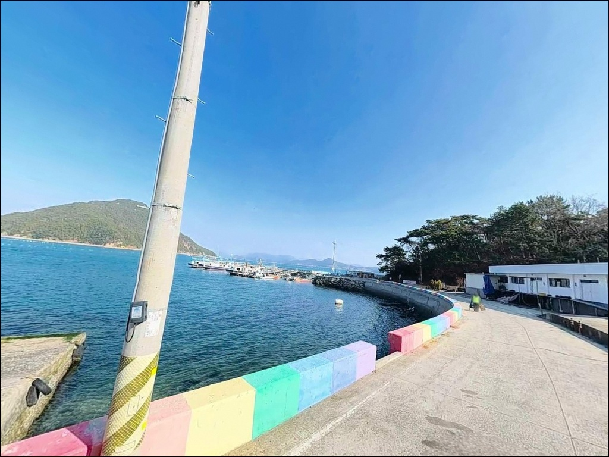
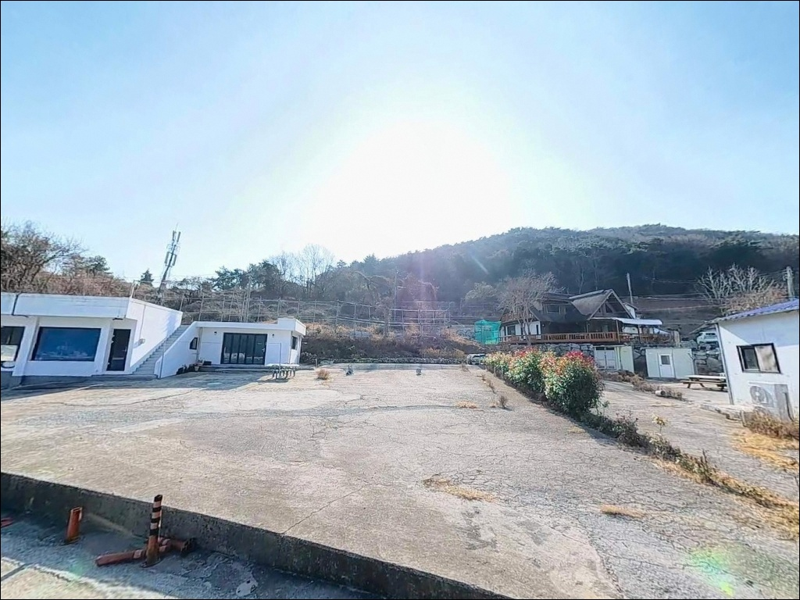
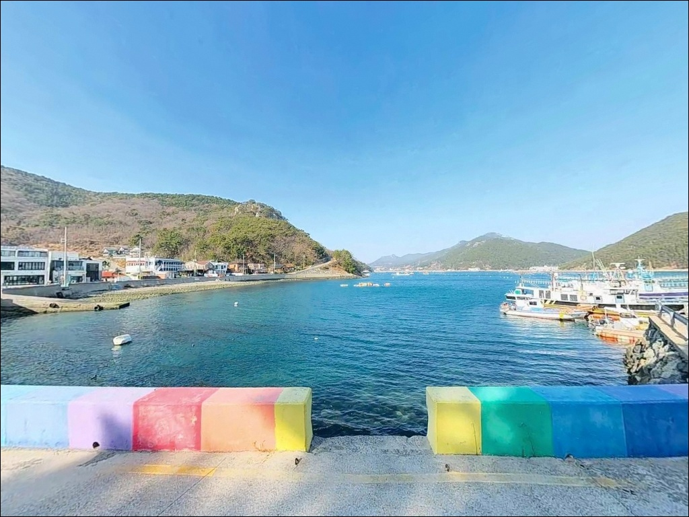
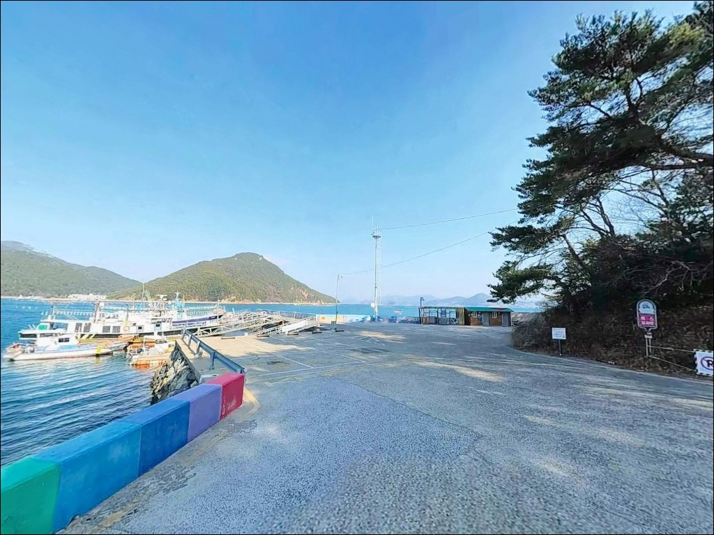
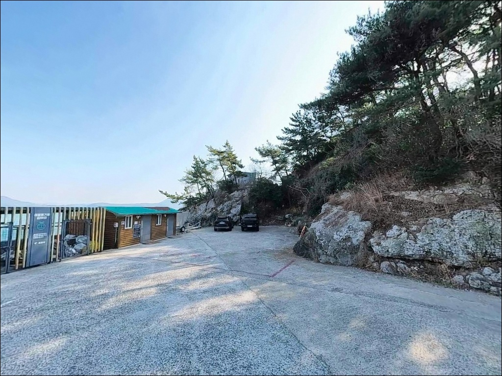

바람 피해 들어간 통영 답하항, 정조 타이밍 수심 5m 끝단에서 터진 호래기 입질
이 페이지에는 광고(제휴 링크 포함)가 있으며, 광고 링크를 통해 구매하면 운영자가 판매 수익 또는 수수료를 받을 수 있습니다. 포인트 사진: 카카오맵 스카이뷰·로드뷰. 이 페이지의 지도·사진 이미지는 카카오맵의 실제 서비스 이미지와 다를 수 있습니다.


포인트 안내
답하항 (논아랫개마을 방파제)
경남 통영시 산양읍 신전리 7-2
가을 호래기 시즌이 끝난 뒤 찾아가면
낚시인이 빠진 자리만 남는 포인트입니다.
이곳은 시즌을 맞춰야 제 값을 하는 방파제이며,
담장 너머 무리하게 자리를 잡는 방식은
안전 위험 구간 진입으로 이어집니다.
이 글은 답하항의 진입 환경, 차박 여건,
지형 기반 낚시 분석, 방식별 공략 조건에 집중합니다.
조황 단정이나 특정 어종 보장은
이 글의 범위에 포함되지 않습니다.

1. 포인트 위치와 진입 동선 분석
답하항은 미륵도(산양읍) 동남쪽 내만 가장 안쪽에 위치한
소형 방파제 어항입니다.
통영 시내에서 미륵도를 연결하는 다리를 건넌 뒤
산양일주로를 따라 신전리 방향으로 진입하고,
마을 내부 도로를 통해 방파제에 닿는 구조입니다.
진입로 전 구간이 포장도로로 이어집니다.
마을 내부 진입로는 1차선 수준으로
곡선 구간이 많은 편입니다.
중형 차량은 통행에 큰 어려움이 없으나,
대형 차량이나 카라반은 진입 전
마을 입구에서 회차 가능 여부를 먼저 확인하는 것이
이 포인트의 기본 접근 원칙입니다.
주차는 방파제 입구 공터와
항 인근 마을 공터를 활용하는 방식이 일반적입니다.
규모가 소형 어항이어서 동시 수용 가능 차량이
많지 않습니다.
호래기·볼락 시즌 주말에는
주차 경쟁이 발생하는 구간이므로
이른 도착이 유리합니다.

2. 차박 환경과 야간 체류 여건
답하항은 내만 가장 안쪽에 위치해
외해 파도와 강풍의 직접 영향을 받지 않습니다.
민가 밀집도가 낮고 야간 차량 통행이 드물어
체류 환경 자체는 조용한 편입니다.
낚시를 마치고 하룻밤 머무는 용도로는
나쁘지 않은 여건입니다.
방파제 자체 조명은 많지 않습니다.
마을 민가와 주변 펜션 조명이
완전 암흑은 아닌 환경을 만들지만,
방파제 끝단이나 석축 구간은
야간에 시야 확보가 어렵습니다.
헤드랜턴은 필수 장비입니다.
산양읍 전역은 한려해상국립공원 구역에 해당합니다.
지정 장소 외에서의 야영·취사는
원칙적으로 금지되는 구역이므로,
출발 전 국립공원 담당 기관에 야영 가능 여부를 확인하는 것이
방문의 기본 절차입니다.


3. 주변 편의시설 및 인프라 현황
방파제 바로 옆에는 별도의 편의시설이 없습니다.
소형 마을 어항 특성상
선착장 기능 위주로 구성된 공간입니다.
식수, 얼음, 낚시 소품 등 출조에 필요한 물품은
출발 전에 완전히 갖춰두는 것이 현실적인 준비입니다.
차량으로 5~10분 거리인
산양읍 소재지 방향으로 이동하면
마트, 식당, 주유소 등
기본 생활 인프라를 이용할 수 있습니다.
반경 3km권의 영운리 방향에도
소규모 편의점과 식당이 있으나,
영업 여부는 출발 전 지도 앱으로 사전 확인하는 편이
좋습니다.

4. 진입로가 좁은 포인트에서 방문 전 챙겨야 할 준비사항
답하항 방문 전 가장 먼저 챙길 것은
시즌 조황 확인입니다.
이 포인트는 가을~겨울 호래기 시즌에
낚시인 유입이 집중되는 구조입니다.
출조 전 "답하항 낚시", "통영 미륵도 호래기 조황",
"통영 산양읍 볼락 조황" 키워드로
최근 시즌 상황을 먼저 검색하는 것이 방문 성패를 가릅니다.
방파제 우측 담장 너머 구간은
안전 위험 구간으로 지정된 자리입니다.
낚시인들이 관행적으로 진입하는 구간이지만,
석축 끝단은 조석 변화에 따라
미끄럼 위험이 급격히 올라갑니다.
구명조끼와 안전화는 출조 전 착용 완료가 기준입니다.
내만 구조라 파도 영향은 크지 않지만,
기상청 해상 예보와 파고 예보를
당일 아침에 다시 한번 확인하는 편이 좋습니다.
에깅과 찌낚시 모두 채비 손실이 발생하는 구간이므로
여분 채비를 넉넉히 챙겨 출발합니다.

5. 지형 기반 낚시 여건 분석
답하항은 삼면이 육지로 둘러싸인 내만 가장 안쪽에
자리한 소형 방파제입니다.
방파제 길이가 짧아 최대 5~6명이 동시 낚시하기
적당한 규모이며,
방파제 초입부터 중간 구간은 수심이 얕고
끝단으로 갈수록 수심 5~6m 수준으로 안정되는 구조입니다.
바닥은 석축과 테트라포트 주변으로
어류의 은신처가 자연스럽게 형성된 지형입니다.
내만 구조 특성상 조류는 완만한 편이지만,
만 입구와 방파제 끝단에는 조류가 모이기 쉬워
정조 타이밍 전후에 입질이 올라오는 경향을 보입니다.
찌낚시란 찌를 수면에 띄워
채비의 수심을 조절하며 어류의 입질을 감지하는 낚시 방식으로,
내만형 잔잔한 수면에서 조류의 흐름을 타는 흘림식 운영에 유리합니다.
방파제 끝단 직벽 라인과
석축 경계면 구간이 주요 탐색 자리이며,
최신 조황은 가기 전에 꼭 검색해 보시기 바랍니다.


6. 포인트에 어울리는 낚시 스타일
이 포인트에서 가장 잘 맞는 낚시는
에깅과 볼락 라이트게임입니다.
에깅이란 갑오징어·무늬오징어·호래기를 대상으로
에기(인조 미끼)를 사용하는 루어낚시 방식입니다.
가을~겨울 호래기 시즌에는
소형 에기를 방파제 끝단 석축 경계면을 따라 운용하는 방식이
이 포인트에서 가장 성행하는 스타일입니다.
볼락 라이트게임은 방파제 석축 및 담장 인근에서
소형 지그헤드와 웜을 활용해 진행합니다.
야간 가로등 집어 효과가 있는 구간에서
조용히 탐색하는 방식이 효과적입니다.
11월 이후 수온이 내려오는 시기부터
씨알이 굵어지는 편이어서
볼락 전용으로 찾는 낚시인도 적지 않습니다.
찌낚시는 외항 직벽 라인을 따라
채비를 흘리는 방식으로 운용합니다.
감성돔과 벵에돔을 대상으로 하는
전문 낚시인이 주로 활용하는 스타일입니다.
수심 5~6m 구간에 채비를 내려
방파제 끝단 전방 10~15m 지점을 집중 공략하는 방식이
이 지형 조건과 잘 맞습니다.
원투낚시는 외항 방향으로 중거리 캐스팅이
기본 운용 방식입니다.
바닥 밑걸림이 비교적 적어 운용이 수월한 편이며,
붕장어나 도다리를 기대해볼 수 있는 지형 조건입니다.
장타보다는 중거리 공략이 이 포인트 수심에 유효합니다.

7. 대안 포인트와 플랜 B 동선
답하항 주차 여건이 여의치 않거나
조건이 맞지 않을 때
가장 가까운 대안은 봉전마을 방파제입니다.
같은 신전리 내만 안에 위치해
해역 조건이 유사하고,
방파제 규모가 더 큰 편이어서
주차 여건도 답하항보다 여유 있는 구조입니다.
영운리방파제는 답하항에서 산양일주로를 따라
3km 내외 거리에 위치합니다.
수심이 가까운 곳과 먼 곳의 차이가 뚜렷하고
조류 소통이 양호해
찌낚시와 루어 모두 운용하기 좋은 구조입니다.
미륵도 최남단의 척포방파제(마동방파제)는
산양읍에서 낚시인 유입이 가장 많은 방파제 중 하나입니다.
호래기·볼락·학꽁치·감성돔을 대상으로
시즌마다 낚시인이 몰리는 곳으로,
내비 주소는 통영시 산양읍 미남리입니다.
답하항이 만원일 때 가장 먼저 고려할 대안입니다.

시즌을 알고 찾는 낚시인에게
답하항은 충분한 포인트입니다
가을~겨울 호래기 에깅이나
볼락 라이트게임을 즐기는 낚시인이라면
답하항의 내만 지형 조건은
잘 맞는 구조입니다.
파도와 바람 영향이 적어
날씨가 거친 날에도 채비 운용이 비교적 안정적이고,
방파제 끝단 5~6m 수심의 석축 구간이
집중 탐색 자리가 됩니다.
반면 진입로가 좁아 주차 공간이 한정되고,
시즌이 끝난 뒤에는 선택지가 줄어드는 포인트이기도 합니다.
시즌 조황 확인, 국립공원 야영 규정 확인, 진입로 사전 점검,
이 세 가지를 갖추고 찾는다면
미륵도 조용한 내만에서
낚시와 차박을 함께 즐길 수 있는 출조가 됩니다.